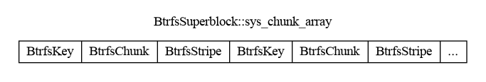

This is the second of a multipart series that explains the basics of btrfs’s on-disk format.
At the end of this series, we’ll have a program that can print out the absolute path of every regular file in an unmounted btrfs filesystem image without external libraries or ioctl(2) calls.
Example code is available here.
btrfs stores everything (with the exception of the superblocks) in B-trees. There’s a number of different trees – each with their own purpose. All the trees are linked together with a root of roots: a root node that contains references to the roots of each tree. As a result, not much data needs to be placed at fixed offsets. This property allows users to perform in-place converstions from ext2/3/4 or reiserfs to btrfs.
btrfs also supports multiple devices, meaning data can be striped or duplicated in various RAID configurations. This information is stored in two central places: the chunk tree and the device tree. The chunk tree maps logical offsets to one or more physical offsets. The device tree does the inverse. The two trees allow btrfs to grow and shrink without unmounting, as chunks can be located and moved on the fly.
Almost all of the on-disk structures work with logical offsets, including the BtrfsSuperblock::root field. In order to get access to the root of roots, we must first bootstrap the chunk tree so that we can translate the logical offset to a physical one. We can then use the physical offset to read data from disk.
First, let’s define the necessary structures:
pub const BTRFS_CHUNK_ITEM_KEY: u8 = 228;
#[repr(C, packed)]
#[derive(Copy, Clone)]
pub struct BtrfsKey {
pub objectid: u64,
pub ty: u8,
pub offset: u64,
}BtrfsKey is a fundamental type. All data items in the on-disk b-trees are keyed by a BtrfsKey. A node has one or more data items. The data items in each node are ordered by their key in ascending order. This allows the tree walking algorithms to do efficient binary searches. I’ll go deeper into this in the next post. Note that the all on-disk structures are stored little-endian. In a “real” implementation, you’d see more little-endian to host-order helpers. However, since your author is writing this on an x86 machine, we ignore translating helpers to keep things simple.
#[repr(C, packed)]
#[derive(Copy, Clone)]
pub struct BtrfsStripe {
pub devid: u64,
pub offset: u64,
pub dev_uuid: [u8; BTRFS_UUID_SIZE],
}
#[repr(C, packed)]
#[derive(Copy, Clone)]
pub struct BtrfsChunk {
/// size of this chunk in bytes
pub length: u64,
/// objectid of the root referencing this chunk
pub owner: u64,
pub stripe_len: u64,
pub ty: u64,
/// optimal io alignment for this chunk
pub io_align: u32,
/// optimal io width for this chunk
pub io_width: u32,
/// minimal io size for this chunk
pub sector_size: u32,
pub num_stripes: u16,
/// sub stripes only matter for raid10
pub sub_stripes: u16,
pub stripe: BtrfsStripe,
// additional stripes go here
}A BtrfsStripe describes a single stripe. One or more may be present depending on the configured RAID level. If more than one is present, the additional BtrfsStripes are laid out “after” the associated BtrfsChunk (see below).
BtrfsChunk is simply the data stored on-disk to describe a chunk. BtrfsSuperblock::sys_chunk_array stores BtrfsKeys and BtrfsChunks “head to feet”. In other words, with two stripes per chunk:

To bootstrap the chunk tree, we write the following code:
fn bootstrap_chunk_tree(superblock: &BtrfsSuperblock) -> Result<ChunkTreeCache> {
let array_size = superblock.sys_chunk_array_size as usize;
let mut offset: usize = 0;We’ll be walking the length of sys_chunk_array, so we’ll need to know where in the array we’re at and when to stop.
let mut chunk_tree_cache = ChunkTreeCache::default();The ChunkTreeCache is a brain-dead implementation of a non-overlapping interval tree. We’ll omit the implementation here for brevity but you can view it in full at the link at the top of this page. Suffice to say, the ChunkTreeCache stores (logical offset start, length) -> physical offset start mappings and does a little math to help us translate a logical offset to physical offset, especially if the logical offset is in the middle of a chunk.
while offset < array_size {
let key_size = std::mem::size_of::<BtrfsKey>();
if offset + key_size > array_size as usize {
bail!("short key read");
}
let key_slice = &superblock.sys_chunk_array[offset..];
let key = unsafe { &*(key_slice.as_ptr() as *const BtrfsKey) };
if key.ty != BTRFS_CHUNK_ITEM_KEY {
bail!(
"unknown item type={} in sys_array at offset={}",
key.ty,
offset
);
}
offset += key_size;First, we start a loop that continues until the entire array is processed.
Next, we look for the current BtrfsKey to process. We do a little unsafe rust to get a &BtrfsKey from the raw sys_chunk_array buffer. There should only be BTRFS_CHUNK_ITEM_KEYs in sys_chunk_array so report an error if we see something unexpected.
if offset + std::mem::size_of::<BtrfsChunk>() > array_size {
bail!("short chunk item read");
}
let chunk_slice = &superblock.sys_chunk_array[offset..];
let chunk = unsafe { &*(chunk_slice.as_ptr() as *const BtrfsChunk) };
if chunk.num_stripes == 0 {
bail!("num_stripes cannot be 0");
}Now that we’ve pulled out a BtrfsKey, we try and pull out the associated BtrfsChunk as well. Each BtrfsChunk stores information about one or more stripes, depending on the RAID level. We have to have at least one stripe otherwise it means there’s no backing device. We do this check just for sanity.
let num_stripes = chunk.num_stripes; // copy to prevent unaligned access
if num_stripes != 1 {
println!(
"warning: {} stripes detected but only processing 1",
num_stripes
);
}To keep things simple, we’ll only process 1 stripe, as stripes should have identical content. Warn the user just to be nice.
let logical = key.offset;
if chunk_tree_cache.offset(logical).is_none() {
chunk_tree_cache.insert(
ChunkTreeKey {
start: logical,
size: chunk.length,
},
ChunkTreeValue {
offset: chunk.stripe.offset,
},
);
}Now we add an entry into the ChunkTreeCache if the interval is not already present. Note that BtrfsKey::offset contains the logical start of the chunk. You’ll see this pattern repeated often throughout the btrfs codebase. The only field that has a fixed meaning between different trees and data items is BtrfsKey::ty. BtrfsKey::objectid and BtrfsOffset::offset are opaque and may represent different things from data item to data item.
let chunk_item_size = std::mem::size_of::<BtrfsChunk>()
+ (std::mem::size_of::<BtrfsStripe>() * (chunk.num_stripes as usize - 1));
if offset + chunk_item_size > array_size {
bail!("short chunk item + stripe read");
}
offset += chunk_item_size;
}
Ok(chunk_tree_cache)
}Despite only processing one stripe, we need to be careful to skip over the entire chunk item. As mentioned earlier, this is because each additional stripe (beyond the first) is appended to the end of BtrfsChunks.
And finally, we return.
Having bootstrapped the chunk tree, the next thing we need to do is process the rest of the chunk tree. More in the next post.